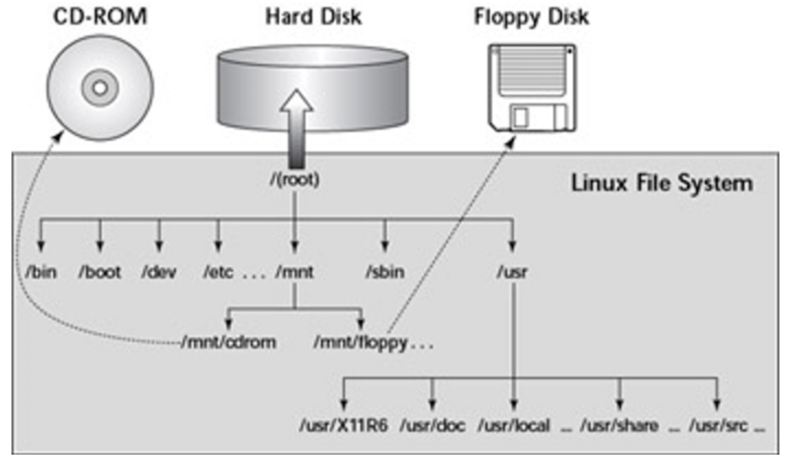
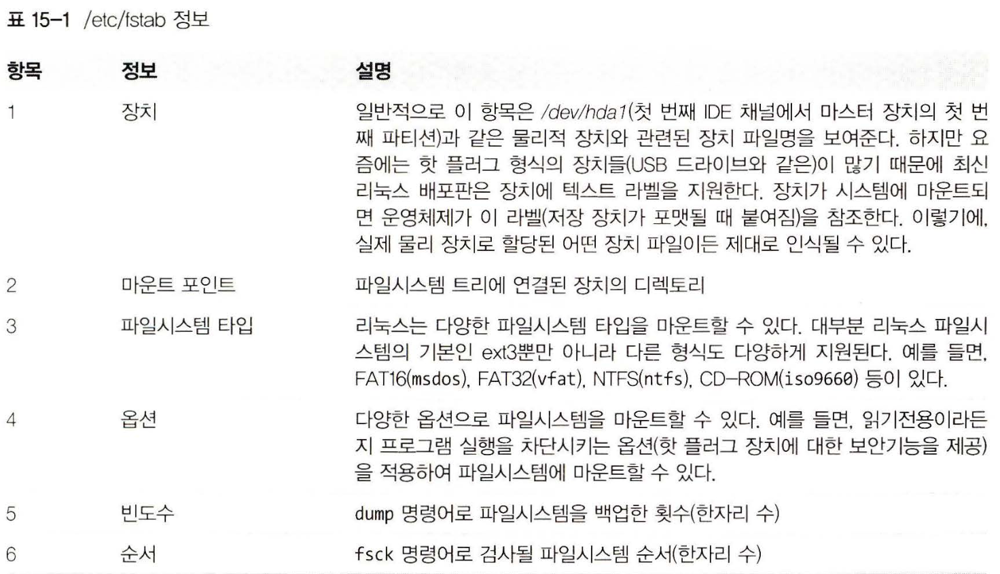
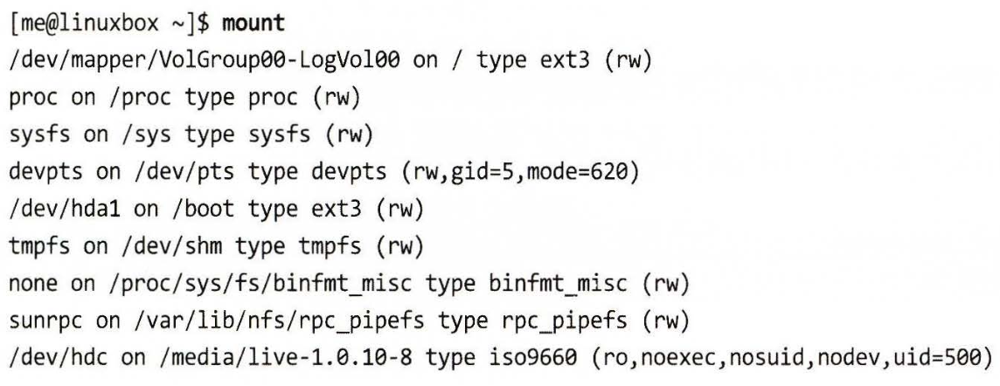

리눅스 커맨드라인 완벽 입문
15. 저장 장치
이전에서는 파일 수준에서 자료를 관리하는 법에 대해 배웠다면,
이번 장에서는 장치 수준에서 자료를 살펴보려한다.
몇 가지 중요한 개념과 저장 장치를 관리할 떄 사용하는 명령어를 알아보자!
- mount : 파일시스템 마운트하기
- umount : 파일시스템 마운트 해제하기
- fdisk : 표 방식으로 파티션 설정하기
- fsck : 파일시스템 검사 및 복구하기
- fdformat : 플로피 디스크 포맷하기
- mkfs : 파일시스템 생성하기
- dd : 블록 기반 자료를 장치에 직접 쓰기
- genisoimge (mkisof) : ISO 9660 이미지 파일 생성하기
- wodim (cdrecord) - 광학 저장 장치에 자료 쓰기
- m5sum : MD5 체크섬 계산하기
저장 장치 마운트하기와 해제하기
-
저장 장치 관리에 있어 첫 번째로 해야 할 작업은 파일시스템 트리에 장치를 연결하는 것
- 이러한 과정을
마운트라 한다. -
즉
장착한다라고 하는데 장치가 운영체제와 연결되는 과정 -
마운트(Mount)란, 파일 시스템을 운영 체제에 연결하여 사용할 수 있도록 하는 작업
-
즉, 디스크나 파티션과 같은 블록 장치를 운영 체제의 디렉토리 구조에 연결하여 파일을 읽고 쓸 수 있게 만드는 것
- 리눅스에서는 디스크나 파티션 뿐만 아니라, CD, DVD, USB 드라이브, 네트워크 드라이브 등 다양한 장치들도 마운트해서 사용 가능
마운트에 대한 쉬운 이해
-
USB 혹은 외장하드를 꼽으면 내컴퓨터 폴더에 USB/외장하드 파일이 뜨면서 자동으로 연결됨
-
이렇게 디스크와 같은 물리적인 장치를 특정 위치 즉 디렉토리에 연결시켜주는 것을 마운트라 함
-
우리가 몰랐던 이유는 윈도우가 자동으로 해주기 때문.
-
이를 PnP라 함
PnP란?
- Plug and play (플러그 앤 플레이)
-
디바이스를 꼽기만 하면 알아서 설정하고 플레이 됨
-
하지만 리눅스의 경우 특히 서버 환경에서는 PnP 기능이 작동하지 않고 직접 연결을 해줘야 함
- 관리자가 직접 특정 디렉터리에 붙이는 작업을 수행해야 함 -> 마운트
보조기억장치(HDD, FDD, CD_ROM 등)나 파일 시스템이 다른 디스크를 /의 하위 디렉터리로 연결하여 사용 가능하게 해주는 명령어
mount
파일 시스템 구조 이해
- 리눅스를 더 잘 이해하기 위해서는 리눅스의 파일 시스템 구조에 대해서 알아야 함.
-
리눅스는 Unix 시스템으로 윈도우와는 다르게 하나의 디렉터리로부터 뻗어지는 single directory tree 구조를 갖고 있음
-
접근 가능한 모든 저장공간의 뿌리가 결국 하나의 디렉터리랑 연결
- 참고로 윈도우의 경우 드라이브당 각 하나의 디렉터리 트리 구조를 갖음
- (D:드라이브, E:드라이브, C:드라이브 이렇게 분리된 것처럼)
- 그래서 리눅스는 마운팅하면 저런 형식의 파일 경로를 갖지 않고
- 예를 들어 ‘/media/cdrom’ 이런식으로 /의 하위 경로를 갖습니다.

부팅 시에 마운트된 장치 목록 표시
- etc/fsab 파일은 부팅 시에 마운트된 장치(일반적으로 하드 디스크 파티션) 목록을 표시한다.

- /etc/fstab 파일
- 대부분의 파일 시스템들은 가상 장치 (이번 주제에 해당 되지 않음)
- 관심 있게 봐야 할 부분은 처음 세 줄

마운트된 파일시스템 목록 보기
- mount : 현재 마운트된 모든 파일시스템 목록 보여줌
마운트 해보기

- CD-ROM을 삽입하면 맨 마지막 줄처럼 자동 마운트
-
현재 시스템의 /dev/hdx 장치가 /media/live-1.0.10-8에 마운트 되었고 그 타입은 iso9660(CD-ROM 형식)이라는 내용
- 우리가 관심 있는 것은 장치의 이름임 (/dev/hdc)
- 이제 마운트를 해제하고 파일 시스템상의 다른 위치를 찾아 다시 마운트 진행
마운트 코드
- su -
- umount dev/hdc # 마운트 해제
- mkdir /mnt/cdrom # 마운트 포인트 생성
- mount /dev/cdrom /mnt/cdrom # 마운트 설정
- 마운트 포인트: 파일 시스템을 사용할 때 해당 파일 시스템이 컴퓨터의 디렉토리 구조 내에서 어디에 위치할 것인지 지정하는 디렉토리.
마운트를 해제하고 다시 설정하는 이유
- CD-ROM과 같은 미디어가 처음 마운트될 때, 일반적으로 시스템이 자동으로 마운트를 수행됨
- 그러나 이렇게 자동 마운트된 디바이스를 사용하면 다음과 같은 문제가 발생 가능
-
시스템이 자동으로 마운트된 마운트 포인트는 읽기 전용으로 마운트됩니다.
이것은 대부분의 경우에는 문제가 되지 않겠지만, 데이터를 기록하거나 디스크에 쓰기를 수행해야 하는 경우에는 문제가 됩니다. -
자동 마운트된 마운트 포인트는 언제든지 시스템에 의해 변경될 수 있습니다. <br. 다른 프로세스나 시스템에서 같은 마운트 포인트를 사용하려고 하면 예기치 않은 결과가 발생할 수 있습니다.
그래서 처음 CD-ROM을 사용하기 전에, 마운트를 해제하고, 새로운 마운트 포인트를 설정함으로써, 더 안전하고 정확한 사용을 할 수 있습니다. 마운트를 해제하고, /mnt/cdrom과 같은 새로운 디렉토리를 만드는 것은, 다른 시스템이나 프로세스가 마운트 포인트를 변경할 수 없도록 하고, 사용자가 마운트 옵션을 지정하여 디스크에 쓰기를 수행할 수 있도록 하는 것입니다.
파티션 나누기
- fdisk - 기본, 이전에 많이 사용
- parted, gdisk, sfdisk, cfdisk - 새로운 파티션 유틸리티
fdisk
- fdisk는 Linux 시스템에서 디스크 파티션을 관리하는 유틸리티입니다.
- 이를 사용하여 디스크를 파티션으로 나눌 수 있으며, 파티션을 수정하거나 삭제하고 새로운 파티션을 생성할 수 있습니다.
fdisk 주요 명령어
- p: 파티션 테이블을 출력합니다.
- n: 새로운 파티션을 생성합니다.
- d: 파티션을 삭제합니다.
- w: 파티션 테이블을 저장하고 종료합니다.